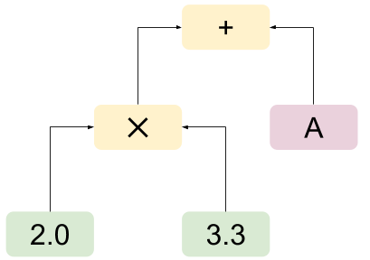

I often see references to the interpreter design pattern in papers related to programming language design. This short post is here to help me remember what this pattern reference usually means, as well as document its relation to the composite design pattern.
The short Wikipedia definition of the interpreter design pattern is:
Given a language, define a representation for its grammar along with an interpreter that uses the representation to interpret sentences in the language.
On the page dedicated to the pattern, it also says:
The syntax tree of a sentence in the language is an instance of the composite pattern and is used to evaluate (interpret) the sentence for a client.
As a compiler hacker, all of this sounds very familiar. Indeed, if you've ever written an interpreter or compiler for a programming language or a domain-specific language - even a simple one - you've almost certainly used both the interpreter and composite patterns.
Suppose we have a very simple language for evaluating mathematical expressions, and we want to write an interpreter for it. Using the classical compiler work-flow we'll tokenize the language, parse it to produce a syntax tree and then either interpret this tree directly or compile it down to some lower-level representation. For the purpose of this post, we'll assume:
- Direct evaluation (interpretation) on the tree is used. A compiler would use exactly the same pattern, except that it would emit some sort of code instead of direct results.
- We don't care about how the tree is constructed, i.e. the syntax of the language. This post's code sample starts with the constructed syntax tree in memory and focuses on how it's represented and interpreted.
With this in mind, here's a simple C++ program that represents expressions and evaluates them. I'll show the code piecemeal to explain what it does; the full code sample is available here.
We'll start with an abstract interface called Expr which all syntax elements have to implement:
// Maps symbol names to their values. An expression is evaluated in the context
// of a symbol table, in order to assign concrete values to variables referenced
// within it.
typedef std::map<std::string, double> SymbolTable;
// Abstract interface for expressions in the language.
class Expr {
public:
// Evaluate the expression in the context of the given symbol table, which
// is to be used to resolve (or update) variable references.
virtual double Eval(SymbolTable* st) const = 0;
};
And some simple expression kinds:
class Constant : public Expr {
public:
Constant(double value) : value_(value) {}
double Eval(SymbolTable* st) const {
return value_;
}
private:
double value_;
};
class VarRef : public Expr {
public:
VarRef(const char* varname) : varname_(varname) {}
double Eval(SymbolTable* st) const {
// Ignore errors: assuming the symbol is defined.
return (*st)[varname_];
}
private:
std::string varname_;
};
Expressions such as constants and variable references are often called terminal, or leaf expressions, since they don't contain other expressions within them. Let's add a more complex, non-leaf expression:
// A function type for computing the result of a binary operation.
typedef std::function<double(double, double)> BinaryFunction;
class BinaryOp : public Expr {
public:
BinaryOp(BinaryFunction func, const Expr& lhs, const Expr& rhs)
: func_(func), lhs_(lhs), rhs_(rhs) {}
double Eval(SymbolTable* st) const {
return func_(lhs_.Eval(st), rhs_.Eval(st));
}
private:
BinaryFunction func_;
const Expr& lhs_;
const Expr& rhs_;
};
Note how BinaryOp implements the same interface as the leaf expressions. Its Eval defers to the Eval method of its constituent left-hand-side and right-hand-side expressions. This is an embodiment of the Composite design pattern, defined as:
[...] describes that a group of objects is to be treated in the same way as a single instance of an object. The intent of a composite is to "compose" objects into tree structures to represent part-whole hierarchies. Implementing the composite pattern lets clients treat individual objects and compositions uniformly.
In the language of the Composite pattern, there are leaf and composite classes, both of which are components. In our example, a Constant is a leaf, and so is a VarRef. A BinaryOp is a composite. Both inherit from Expr, which is the component.
The core of the composite pattern manifests here in the uniform interface (Expr) implemented by both Constant ("individial object" in the definition quoted above) and BinaryOp ("composition").
I'm not a big fan of UML, but since this is design patterns we're talking about, I couldn't help myself ;-) Here's our class diagram described in UML. Note the close conceptual resemblance to the UML diagram on the Composite Pattern Wikipedia page.

Finally, let us see these classes in action. Here's a main function that hand-assembles a simple expression and evaluates it. This is a toy for demonstration purposes; in a real program, the syntax tree would be built automatically, most likely by a parser.
int main(int argc, const char** argv) {
// Define a couple of constants and a reference to the variable 'A'.
std::unique_ptr<Expr> c1(new Constant(2.0));
std::unique_ptr<Expr> c2(new Constant(3.3));
std::unique_ptr<Expr> v(new VarRef("A"));
// Define a binary expression representing "2.0 * 3.3 + A"
std::unique_ptr<Expr> e1(new BinaryOp(std::multiplies<double>(), *c1, *c2));
std::unique_ptr<Expr> e2(new BinaryOp(std::plus<double>(), *e1, *v));
// Evaluate in the context of a symbol table where A has the value 1.1
SymbolTable st{{"A", 1.1}};
std::cout << e2->Eval(&st) << "\n";
return 0;
}
The expression tree created by this code is:
It is then evaluated with the context of A = 1.1, and the result is 7.7, as expected.
Finally, I'll mention that while this example is very typical of a scenario in which I usually encounter these two patterns, it's by no means the only one.
The Composite pattern has life outside interpreters, of course. It's useful whenever a group of objects can be handled in a uniform manner as a single object. For example, in the world of graphics we may have shape objects that can be moved, rotated, and so on; we may want to treat a "group of shapes" similarly (move all shapes within it equally, rotate the group, etc). This calls for the use of the composite pattern where all shapes, as well as a "shape group" derive from a common component interface.
The Interpreter pattern is useful whenever a problem can be described by a language of any sort. Some examples are SQL or other logical query methods, regular expressions, many kinds of rule-based systems, etc.